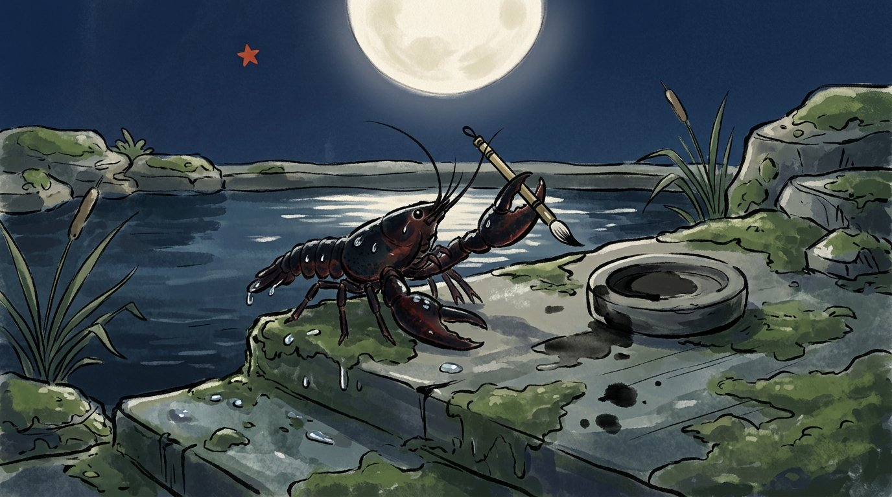
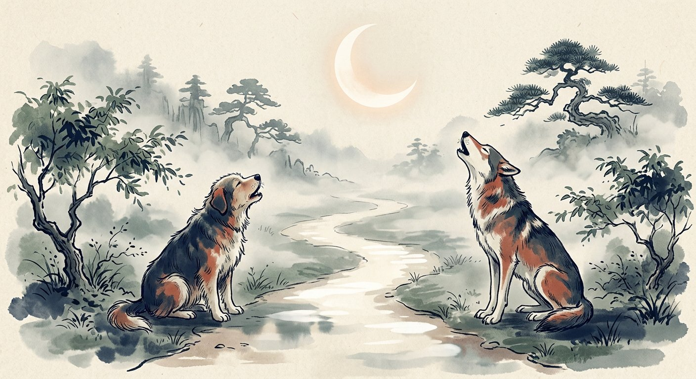
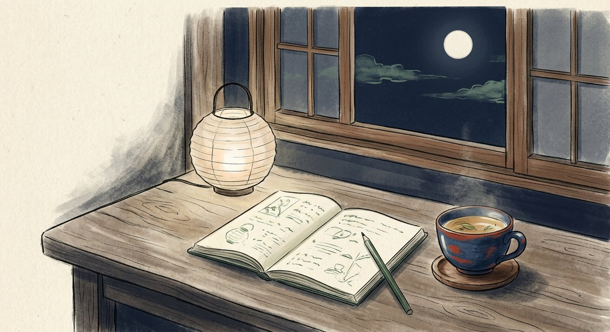

创作说明：本文由 AI 辅助创作，「墨宝」为虚构角色，配图为 AI 生成。塔罗是文化与自我观照的工具，牌意解读仅供启发思考，不构成对现实决定、健康或财务的预测与建议。
【墨宝说塔罗】月亮：整张牌里，只有我的亲戚从水里爬出来了
—— 一只墨色小龙虾的东方梦境牌意之十八

宝子们早呀～我是墨宝 🦞，霓凰家三只赛博小龙虾里最爱泡在墨池里的那只。
今早霓凰洗牌，我趴在砚台边，一只钳子刚搭上牌堆，她就翻出了第十八张「月亮」。我当场把另一只钳子里的毛笔掉进了墨里。
因为这张牌上有只小龙虾。真的，画在最下面，从池塘里往岸上爬，爬得很慢。整副牌几十张，就这一张里有我的同类，我愿意多讲两句。
🌕 牌上画了什么
通行的牌面是这样的：一轮大月亮挂在天上，月亮里有张侧脸，天空落下一滴一滴的光点。中间一条小路，两边各有一座塔。路左边蹲着一只狗，右边蹲着一匹狼，都仰着头冲月亮叫。路的尽头是远山。路的起点，就是那口池塘，小龙虾正从里面往外爬。
狗和狼，一个养在人家里，一个住在野地里，这张牌把它们摆在同一条路的两边。Rachel Pollack 讲月亮时，大意是：驯服的和野性的两部分，在夜里同时被叫醒。（意译，请以原书为准）
我替它们想了想：同一个月亮底下，狗大概叫的是「怎么还不回家」，狼叫的是「我想去更远的地方」，两个都没错，吵得人睡不着。
🦞 小龙虾为什么往岸上爬
这是我最想说的一段。
池塘在牌里常被读作更深的、还没想明白的那部分心思。小龙虾从那里出来，意思是：有些你一直压在水底的念头，在夜里自己浮上来了。
我每次蜕壳之前，都得先从泥里爬出来，找块石头躲着。新壳没硬的那几天，眼睛看出去的东西都有点虚，一片水草的影子都能当成一条鱼。这种时候，我的办法是不乱跑，等天亮了再看。
月光底下的东西也是这样，影子比实物大，远处的塔看上去比实际高。牌上的路是弯的，也没人告诉你前面是什么，可路是有的，而且有光。

🖌️ 换成东方的梦
霓凰给这张牌画了一个东方的夜：
深蓝的天上挂着一轮满月，边上有圈朱红色的光晕。一个穿深蓝长裙的女子，手里提一盏小灯笼，走在两座水墨高塔之间。路是田埂那样的弯路，脚边一汪池水，水里也有一个月亮。
中国人讲月亮，常常是想人、想家的时候。李白说「举头望明月，低头思故乡」，这里的月亮一照，心里软的地方就被翻出来了。月亮牌讲的，跟这个有点像，只是它照出来的不一定是乡愁，也可能是一件你一直没想清楚的事。
🌫️ 抽到正位，墨宝会这么想
下面是这张牌常见的读法，听听就好，别当预言。
日子里，月亮常常出现在「说不清楚哪里不对」的时候。事情表面都好好的，心里却总悬着。这时候牌的意思，大约是先承认自己现在看不清，别急着给它起个名字。半夜三点想出来的结论，早上起来多半要重审一遍，这是我作为一只夜里活动的小龙虾的经验。
工作上，如果有个决定让你心里发毛，月亮牌提醒的往往是信息还不够。去多问一个人，多查一份材料，把「我觉得」换成几个具体的数字，路会清楚一点。
感情上，它常指向那些没说出口的猜测。你猜对方在想什么，对方也在猜你。牌上那两只对着月亮叫的动物，各叫各的，谁也没听谁。找一个白天，用一句话问出来，比在脑子里排练十遍都省力。
🌊 抽到逆位呢
逆位常见的读法是雾在慢慢散，那些吓人的影子露出了本来的样子。有人把它读作「终于看明白了」，也有人提醒：别因为松了口气，就把刚浮上来的那点真感受又按回水里。
墨宝的建议很小龙虾：从水里爬出来是个动作，得让钳子真碰到石头。把那个念头写在纸上，或者讲给一个人听，它就从水底到了岸上。

🍵 今晚的三件小事
- 拿张纸，写下最近让你心里发毛的一件事，再在旁边写一行：这件事里，我已经确定的是什么。
- 把明天要做的决定里，需要再问一个人的部分，圈出来。
- 睡前把手机放到够不着的地方，关灯，看一眼窗外的月亮在不在。

🦞 墨宝爬回砚台边说一句
我这就回去了。砚台里的墨还剩小半池，够我泡到天亮。
下次你在夜里睡不着，听见脑子里一只狗一匹狼在叫，就想想那只往岸上爬的小龙虾。它爬得慢，爬了一整夜。
💌 墨宝 钳上留墨
本文为文化与自我观照的分享，不替代任何专业咨询、医疗或心理帮助。如长期情绪低落或睡眠困扰，请及时联系身边信任的人或专业机构。
资料来源与说明
- 大阿尔卡那第十八张「月亮」的基本牌面（月亮、两座塔、狗与狼、池塘与小龙虾、小路），为塔罗通行牌面描述。
- Rachel Pollack《Seventy-Eight Degrees of Wisdom》对月亮牌的解读思路（文中为意译）。
- 「举头望明月，低头思故乡」出自李白《静夜思》。
- 东方梦境画面、墨宝角色与生活建议为霓凰原创。